Clients
L’onglet Clients contient la liste des clients déclarés, avec des informations élémentaires sur leur état actuel.
Les informations affichées selon les colonnes sont les suivantes :
-
Nom du client : comme l’indique la colonne, il s’agit du nom de l’entreprise cliente, sous lequel est indiqué le le site principal (cliquez sur le nom du client pour accéder à ses paramètres)
-
Préfixe : abréviation permettant de désigner le client de manière courte.
-
Sites : nombre de sites ajoutés pour un client (en cliquant dessus, vous accéderez aux paramètres des sites)
-
Type de facturation : représente le mode de facturation pour chaque client
-
Agent : dernier agent utilisé avec la date et l’état actuel
-
Nombre de périphériques : correspond aux informations sur le nombre de périphériques associés à un client (en cliquant sur ce lien, vous accédez à l’onglet des périphériques du client)
-
Volumes du mois dernier : nombre d’impressions réalisées par chaque client le mois précédant le mois courant
-
Action : en cliquant sur le bouton,, vous pouvez éditer les paramètres du client en vue de les modifier ou désactiver le client.
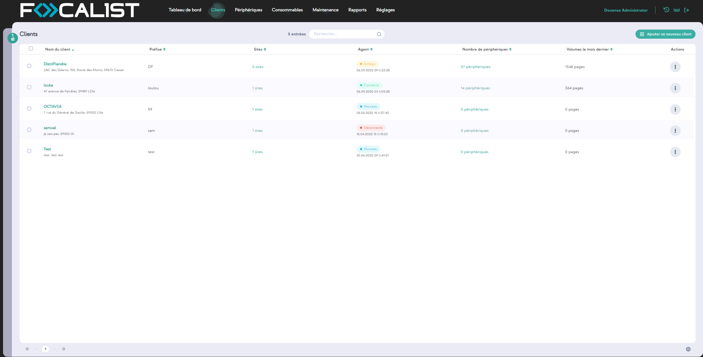
La recherche est fondée sur des données figurant dans des colonnes : Nom et préfixe du client.
L'icône en forme d’engrenage située en bas à droite permet de configurer les informations affichées par défaut pour chaque client (comme le nombre de colonnes et de lignes visibles, par exemple).
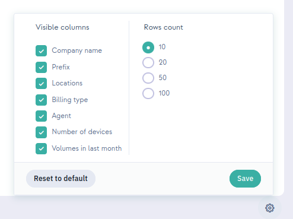
Client
Client est un module généré pour chaque client, qui peut être spécifié en tant que paramètres de la société. Vous pouvez y accéder en cliquant sur le nom de l’entreprise cliente ou en choisissant « Modifier » parmi les actions possibles dans la liste des clients de l’onglet « Clients». Dans ce module, vous pouvez modifier les paramètres du client sélectionné. Les paramètres sont divisés en plusieurs éléments en fonction de leur sujet et de leur fonctionnalité. Chaque paramètre sera décrit dans le détail.
Statistiques
Statistiques est le premier onglet des paramètres du client. Il contient des informations élémentaires sur le client et des statistiques sur les impressions effectuées par ce client.
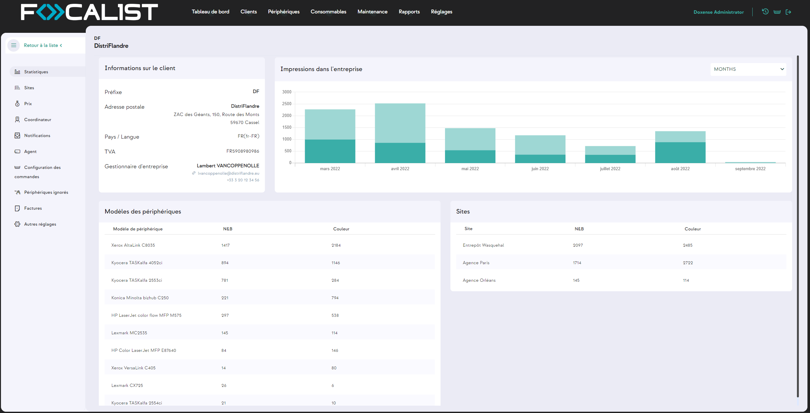
Les statistiques ont été divisées en quatre libellés :
-
Informations sur le client : coordonnées de l'entreprise cliente
-
Impressions dans l’entreprise : représentation visuelle des pages utilisées, qui peut être affichée par jour ou par mois
-
Modèle de périphériquse : liste des périphériques ainsi que les pages imprimées (en monochrome et en couleur) pour chaque périphérique
-
Sites : liste de tous les sites associés au client, avec les pages imprimées (en monochrome et en couleur) pour chaque site.
Sites
Cet onglet contient des informations sur les emplacements des imprimantes pour un client donné. Chaque emplacement dans le tableau contient par défaut les informations suivantes :
-
Nom du site : nom donné au site
-
Adresse : adresse exacte avec nom de la rue, le numéro, le code postal et la ville
-
Coordinateur, personne chargée de réaliser les activités de maintenance sur le site
-
Nombre de périphériques : périphériques présents sur le site
-
Actif : (actif ou inactif)
-
Actions (Statistique, Modifier, Activer/Désactiver, Supprimer)
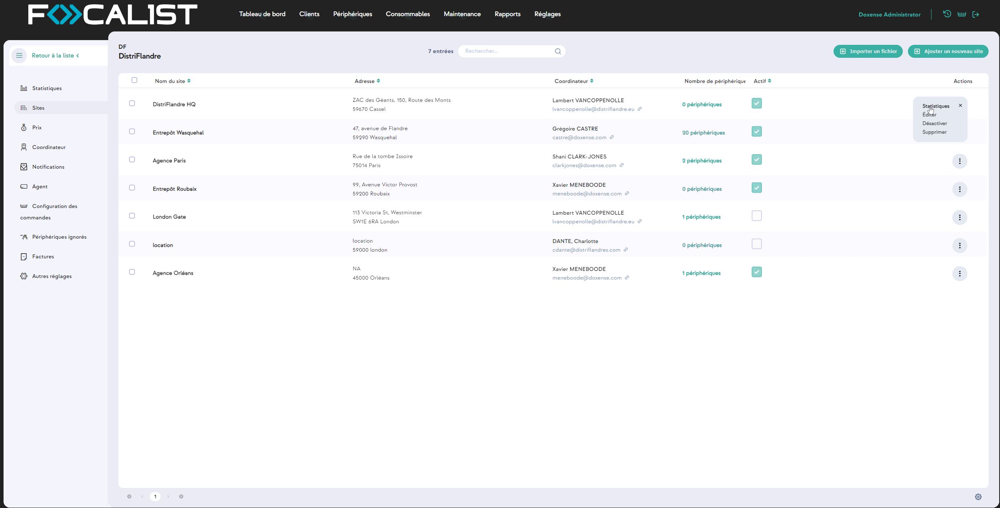
Actions
Statistique : affiche des informations statistiques sur les pages imprimées, par mois ou par jour sur un site.
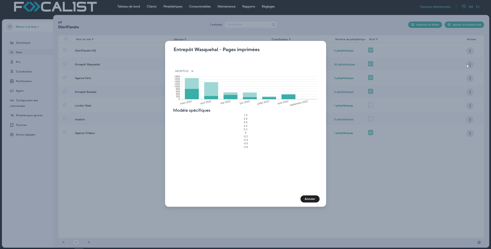
Editer : vous permet de modifier/mettre à jour les informations sur les sites, telles que l’adresse et le coordinateur. Vous pouvez choisir un coordinateur dans la liste ou en créer un nouveau qui sera ajouté à la base de données après enregistrement.
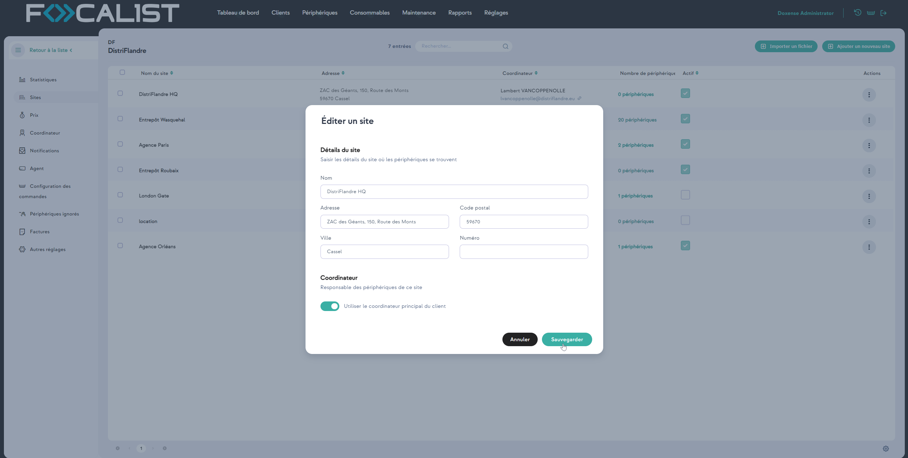
Activer/Désactiver : vous pouvez activer ou désactiver les sites sélectionnés. Si le site est actif, il peut être sélectionné lors de l’ajout d’un nouveau périphérique. S’il est défini comme inactif à ce moment-là, il n’est pas affiché.
Supprimer : cette option permet de supprimer définitivement des sites sélectionnés parmi les emplacements d’un client.
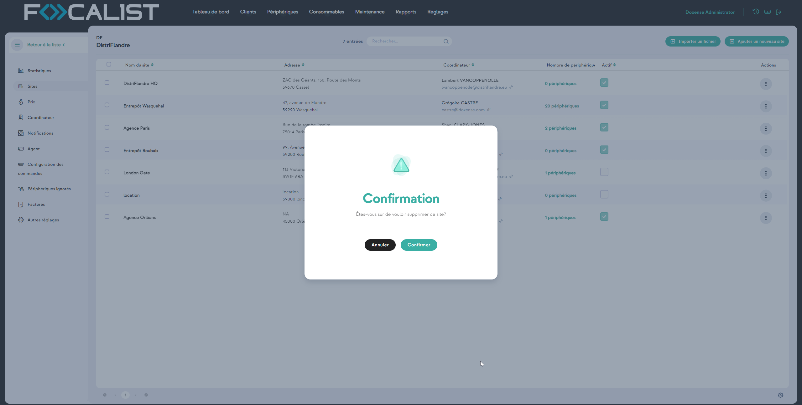
Prix
Prices (Prix) est un module qui vous permet de définir le type de facturation pour le client sélectionné. Vous pouvez choisir votre type de facturation en cliquant sur « Paramètres avancés » et en en sélectionnant un dans la liste déroulante. L’utilisateur ne peut pas créer ou modifier le modèle de facturation, il a seulement la possibilité de modifier le modèle sélectionné.
Il existe quatre types de facturation, mais chacun présente une option commune à choisir en haut. Il s’agit de l’option « Type ». Cette option permet de définir la plage de données prises en compte pour établir les rapports de facturation.
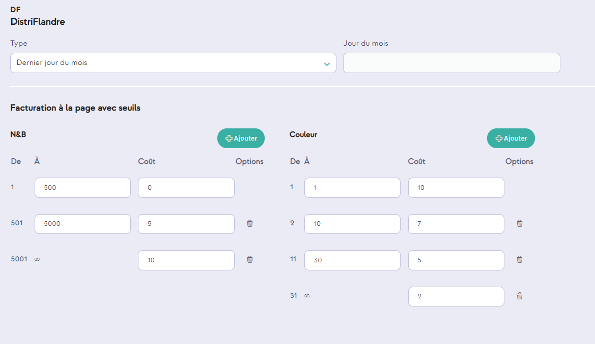
Utiliser une méthode simple de facturation
Dans les paramètres par défaut du client, l’application utilise un modèle de facturation simple, visible dans l’onglet « Prix », qui prend en compte les prix indiqués lors de l’enregistrement du client pour le monochrome, la couleur et la numérisation. L’utilisateur peut modifier les prix à tout moment pendant le paramétrage.
Remarque : il convient de rappeler que toute modification de ces prix prend effet à partir du début de la période comptable en cours. Les périodes de facturation précédentes ne seront pas affectées.
L’utilisateur peut également définir le nombre de pages disponibles dans l’abonnement pour le périphérique. Il s’agit d’une option supplémentaire (système d’abonnement), qui permet au client de déterminer le nombre de pages imprimées qui est facturé dans les conditions générales du contrat et chaque page au-delà du seuil fixé sera facturée aux prix spécifiés dans la première section.
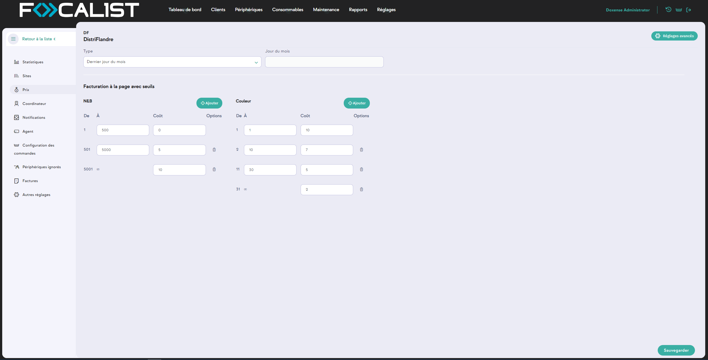
Veillez à cliquer sur « Enregistrer », car, faute de quoi les modifications ne seront pas saisies dans le système. Cela s’applique à tous les types de facturation.
Prix personnalisé pour le modèle de périphérique
Le prix personnalisé pour le modèle de périphérique permet de définir des prix uniques pour une imprimante donnée. Dans ce modèle, il y a des seuils de prix par défaut comme dans le précédent, mais il est également possible de définir des tarifs pour un modèle d’imprimante spécifique ou une vraie imprimante connectée.
En cliquant sur le bouton « Ajouter », une fenêtre contenant les listes « Fabricant » et « Numéro de modèle » apparaît. Vous devez choisir une option dans chaque liste et appuyer sur Enregistrer :
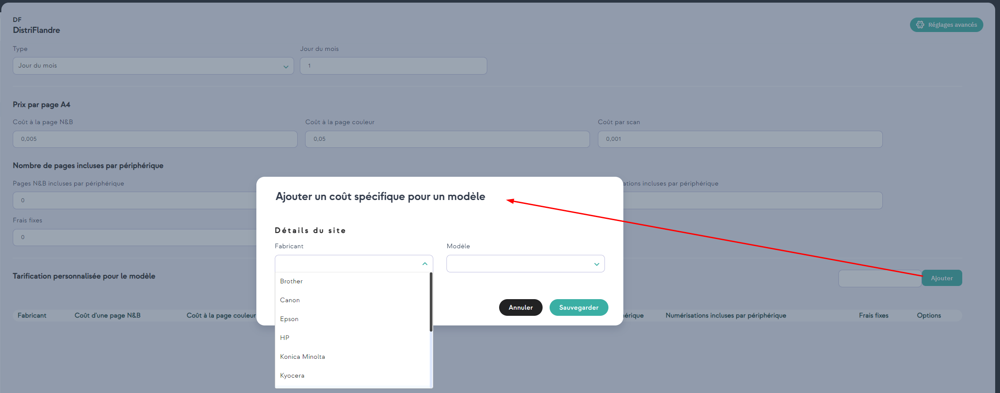
L’administrateur peut définir des prix individuels pour plusieurs modèles de périphériques à la fois :
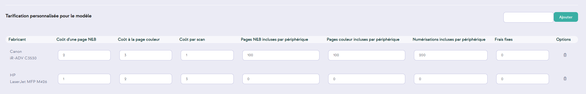
Prix personnalisé pour le nombre total de pages imprimées
Le modèle est basé sur plusieurs seuils. Cette option vous permet de fixer le prix des impressions en définissant plusieurs seuils de volume spécifiques, qui sont définis individuellement par le client. Le système calcule le montant du contrat en fonction des prix donnés, c’est-à-dire en fonction du nombre de pages imprimées.
En cas de dépassement du nombre de pages imprimées correspondant au premier seuil, le système calcule le prix de la page indiqué qui correspond au deuxième seuil. Le nombre de seuils de prix est arbitraire et dépend des besoins du client :
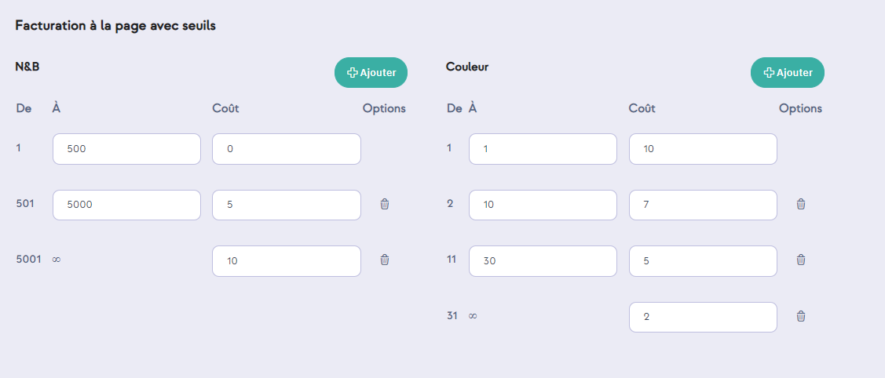
Remarque : vous devez utiliser l’option « Enregistrer » lorsque vous avez terminé. Autrement, le système ne se souviendra pas des seuils de prix définis précédemment.
Exemple :
Le client a imprimé 13 207 pages en monochrome et 11 216 pages
Le montant mensuel facturé sera calculé de la manière suivante :
MONO :
|
DE |
À |
QUANTITÉ |
PRIX |
PRIX FINAL |
|
1 |
100 |
100 |
10 |
1000 |
|
101 |
1000 |
900 |
8 |
7200 |
|
1001 |
10000 |
9000 |
6 |
54000 |
|
10001 |
∞ |
3207 |
4 |
12828 |
|
SOMME |
|
75028 |
||
Couleur :
|
DE |
À |
QUANTITÉ |
PRIX |
PRIX FINAL |
|
1 |
100 |
100 |
12 |
1200 |
|
101 |
1000 |
900 |
10,5 |
9450 |
|
1001 |
10000 |
9000 |
7,75 |
69750 |
|
10001 |
∞ |
1216 |
5,20 |
6323,2 |
|
SOMME |
|
86723,2 |
||
Remarque : si le contrat prévoit un nombre de pages imprimées par mois pour lequel vous ne serez pas facturé, vous devez utiliser le « système d’abonnement ».
Facturation au consommable
Initialement, ce modèle est vide. Pour l’utiliser, il faut d’abord ajouter un agent et rechercher un nouveau périphérique sur le réseau. Après avoir lancé une recherche sur le réseau, vous devez ajouter un périphérique trouvé. Les consommables seront détectés et ajoutés à cet endroit. Si l’agent n’a pas trouvé le périphérique, vous ne pourrez rien définir dans ce modèle. L’application vous permet de fixer un prix pour chaque consommable.
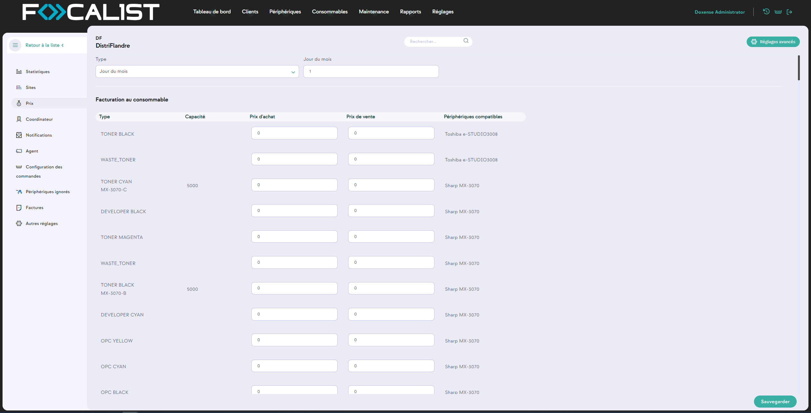
Après les avoir saisies dans le système, vous devez utiliser l’option « Enregistrer ». Autrement, le système ne se souviendra pas des modifications.
Remarque : il faut parfois un certain temps pour charger des consommables. Si vous êtes sûr d’avoir déjà ajouté des périphériques, soyez patient et attendez.
Coordinateur
Dans l’onglet Coordinateur, une liste des coordinateurs est définie dans la configuration du client. Comme indiqué précédemment, les coordinateurs sont des personnes chargées de la maintenance des périphériques sur des sites dédiés ou dans l’ensemble de l’entreprise cliente. Chaque client dispose d’un coordinateur principal qui peut être choisi par défaut lors de l’ajout de nouveaux sites au sein de l’entreprise cliente. Le coordinateur principal du client est marqué sur la liste de tous les coordinateurs.
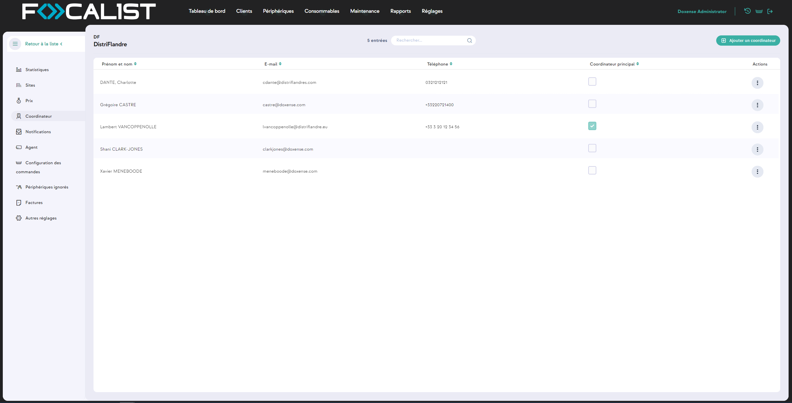
L’administrateur a la possibilité d’ajouter un nouveau coordinateur en utilisant l’option « Ajouter un coordinateur ».
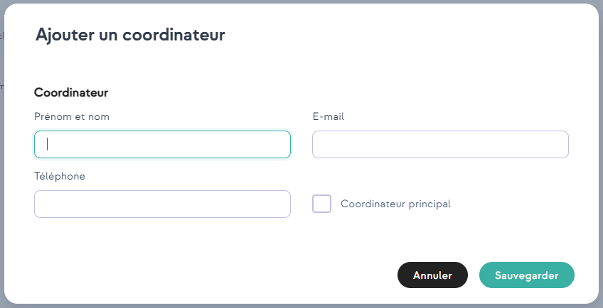
Lorsque vous ajoutez un nouveau coordinateur, vous pouvez le désigner comme coordinateur principal de votre client ou le faire plus tard si nécessaire. Au niveau de l’édition, la même option permet de désigner une personne en tant que coordinateur chez le client.
Notifications
Dans l’onglet notification, l’utilisateur de l’application peut gérer les informations envoyées directement à la boîte de réception.
Lors de l’aperçu, les notifications ont été séparées en catégories comme suit :
-
Notifications des périphériques
-
Notifications de consommable
-
Notification par alerte SNMP
-
Notification des agents
-
Autres notifications
s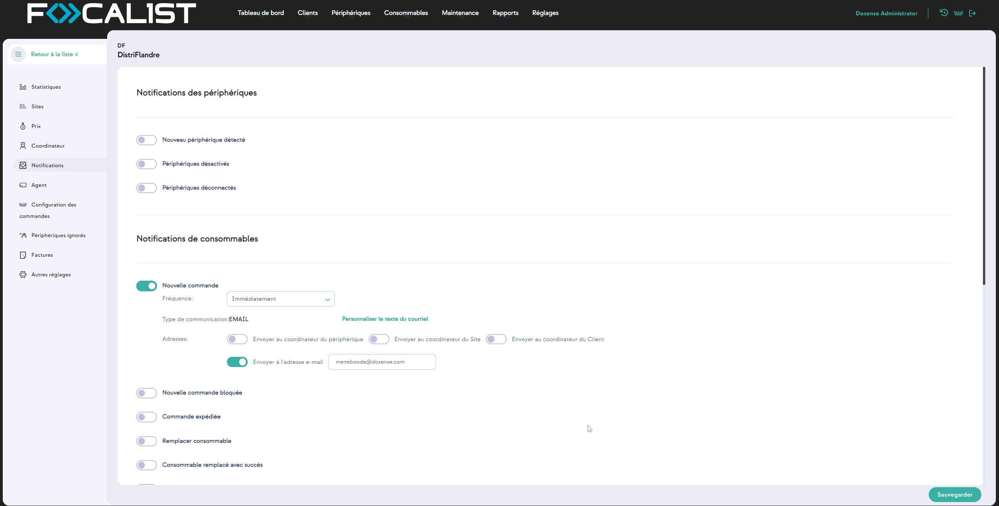
Pour activer la notification sélectionnée, vous devez cliquer sur le bouton ON/OFF qui se trouve à côté d’une notification. Vous pouvez ensuite rédiger un courriel personnalisé ou sélectionner des destinataires dans la liste.
Vous pouvez également choisir la fréquence de l’e-mail.
Personnaliser le message électronique
Cette fonction vous permet de personnaliser l’e-mail qui sera envoyé. Vous pouvez ajouter des informations supplémentaires en fonction de vos préférences.
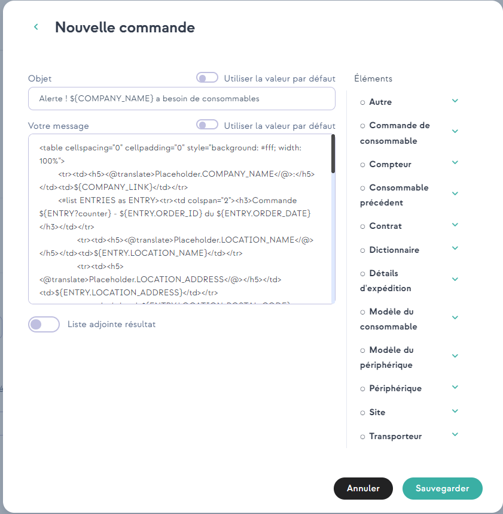
Remarque : chaque client possède différents paramètres, ce qui signifie que votre paramètre s’appliquera uniquement au client que vous êtes en train de modifier.
Agent
L’onglet Agent nous fournit des fonctionnalités pour gérer les agents. Une fois que vous avez ouvert l’onglet, vous verrez un tableau avec les agents du client. Des informations sont affichées, telles que le nom de l’agent, son état actuel, ainsi que des actions telles que la modification ou la suppression d’agents. Si le client sélectionné ne compte qu’un seul agent, vous serez automatiquement transféré vers les paramètres de cet agent.
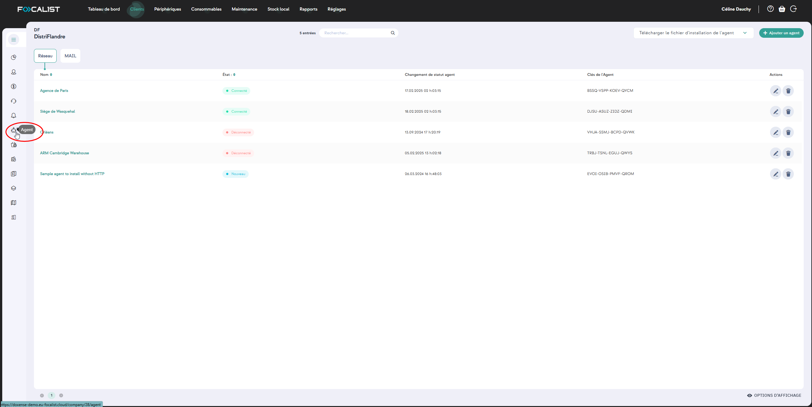
État :
-
Nouveau - ajouté dans l’application serveur mais non connecté à des agents sur les périphériques.
-
Connecté - connexion fonctionnant correctement
-
Ambigu - plusieurs agents possèdent des états différents
-
Déconnecté - Impossible de se connecter à l’agent
Qu’est-ce qu’un agent ? Pourquoi dois-je l’installer ?
-
Vous pouvez considérer un agent comme une sorte de proxy qui permet à notre application d’accéder aux imprimantes.
-
Un agent doit être installé sur l’ordinateur pour chaque réseau auquel des imprimantes sont connectées. Nous les appelons des agents de réseau et chaque réseau doit avoir un agent logique différent dans l’onglet Client->Agent.
-
Dans le cas d’une imprimante USB, vous devez installer un agent USB. Pour fonctionner correctement, l’imprimante doit être connectée à l’ordinateur avec un agent USB.
-
Pour un agent logique, dans l’onglet Client->Agent, vous pouvez avoir plusieurs agents USB connectés. Vous pouvez connecter un agent de réseau et plusieurs agents USB à un agent logique.
-
L’agent USB n’est pas disponible par défaut. Pour le débloquer, vous devez contacter l’assistance.
-
Les agents permettent d’accéder à distance au panneau de l’imprimante, mais ils ne sont pas disponibles par défaut. Pour le débloquer, vous devez contacter l’assistance.
Paramètres de l’Agent
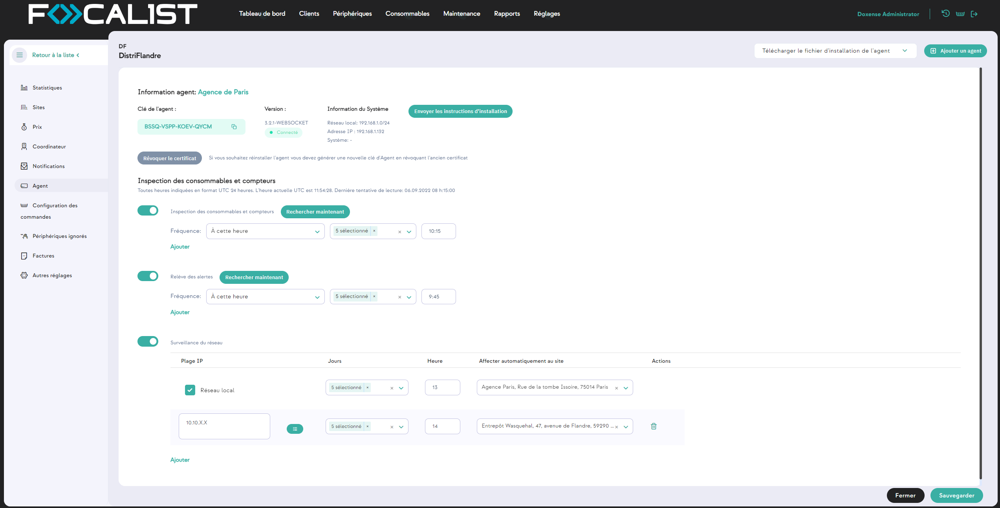
Informations sur les agents
Cette section contient des informations de base sur l’agent sélectionné, notamment :
-
Nom de l’agent - nom donné à l’agent. Nous recommandons de donner des noms qui peuvent être facilement identifiés avec le périphérique sur lequel l’agent est installé.
-
Clé d’agent - utilisée pour connecter les agents au serveur, nécessaire lors de l’installation de l’agent.
-
Version - information sur la version de l’agent actuellement utilisée
-
Informations sur le système - Adresse IP à laquelle l’agent de réseau est installé.
Révoquer un certificat
Chaque agent logique du serveur ne peut avoir qu’un seul agent de réseau. Si vous voulez réinstaller un agent ou l’installer sur un autre périphérique, vous devez révoquer le certificat du précédent. Ce bouton permet de le faire côté du serveur.
Inspection des consommables et compteurs
Dans cette partie, vous pouvez personnaliser un programmateur des recherches réalisées par l’Agent. L’option de recherche possible a été séparée en 3 différentes parties :
-
Inspection des consommables et compteurs
-
Relève des alertes
-
Analyse du réseau
Outre le paramétrage du planificateur, vous pouvez également utiliser l’option « Analyser maintenant » pour vérifier l’état actuel des périphériques. En outre, le programmateur peut également être exclu par le bouton ON/OFF qui se trouve à gauche du nom du programmateur.
Ajouter un nouvel agent
Pour ajouter un nouvel agent, vous devez appuyer sur le bouton « Ajouter un agent » qui se trouve dans le coin supérieur droit et saisir le nom du nouvel agent. La procédure d’installation et d’ajout est décrite dans Installation de l’agent.
Configuration des commandes
La configuration des commandes est une fonctionnalité importante qui améliore le processus de mécanisation du système. Grâce à cette option, nous pouvons déterminer avec précision le niveau de stock à partir duquel le système générera automatiquement une commande, ce qui simplifie la gestion des livraisons.
Vérifier si le toner a été correctement installé
Après avoir changé le toner, le programme vérifie s’il a été installé correctement. Si l’option est activée, l’état devient « Toner remplacé » lorsque le toner est correctement installé. En cas de mauvaise installation, les applications ne changent pas le statut de la commande. En revanche, si l’option n’est pas définie, le statut de la commande est toujours modifié en « Toner remplacé », que l’échange ait été effectué correctement ou non.
Remarque : Procédure d’installation correcte par statut :
Nouvelle(Non expédiée) -> Installation en cours -> À remplacer -> Toner remplacé
Après l’envoi d’une notification, marquer les commandes de consommables comme expédiées
Si cette option est activée, l’application change le statut de la commande en « Installation en cours » après l’envoi de la commande. C’est utile lorsque la case précédente est cochée. Si cette option n’est pas activée, le statut de la commande de consommables sera défini comme « Nouvelle (non expédiée) ». Avec l’activation de l’option Vérifier l’installation, l’état doit être modifié manuellement sur « Installation en cours ».
Après l’envoi d’une notification, marquer les commandes de pièces comme expédiées
Comme pour les consommables dont il a été question plus haut, mais pour les pièces.
Bloquer la commande de toner, si son efficacité est inférieure à (%)
Les matériaux possèdent leur propre efficacité, par exemple, si un matériau donné a une capacité de 1 000 feuilles, mais qu’en réalité il ne peut en imprimer que 500, cela signifie que son efficacité est de 50 %. Le rendement du matériau est proportionnel à la quantité de matériau utilisée et aux pages pour lesquelles cette quantité était suffisante.
Méthode de génération des commandes
Pour configurer des commandes automatiques, accédez aux détails d'une entreprise donnée et sélectionnez l'onglet "Configuration des commandes" dans le menu vertical.
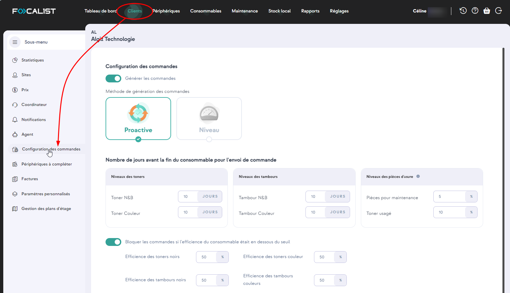
Dans notre système, nous proposons deux méthodes efficaces de configuration des commandes. La première est l'option "Proactive", qui permet à l'utilisateur de spécifier le nombre de jours prévus jusqu'à l'épuisement du matériel. Une fois cette durée estimée atteinte, le système génère automatiquement une commande. Les méthodes proactives peuvent être mises en œuvre UNIQUEMENT pour les imprimantes qui ont plus d'un mois d'historique d'impression. Dans la mesure du possible, cette méthode utilise l'historique d'il y a trois mois pour faire des prévisions.
La deuxième option est "Niveau", qui vous permet de fixer la limite du stock de matériel en pourcentage. Lorsqu'elle est atteinte ou dépassée, le système génère immédiatement une commande, soutenant ainsi efficacement le processus de gestion des approvisionnements. . Cette flexibilité vous permet d'adapter le processus de commande aux besoins individuels et à l'évolution des conditions commerciales, contribuant ainsi à une gestion efficient des approvisionnements.
La vue de génération d'ordres pour les deux configurations est identique et comprend trois sections décrites, qui présentent :
Niveaux pour les toners, notamment :
-
les toners mono (monochromes)
-
les toners couleur
Niveaux pour les tambours, y compris
-
Tambour mono (monochrome)
-
Tambour couleur
Niveaux pour la partie MK (Maintenance et composants clés), comprenant :
-
Matériel d'entretien (parmi les articles et composants que l'on peut trouver ici, on peut citer des choses telles que les huiles, les filtres, les rouleaux, les bandes de transfert, etc.)
-
Toner usagé
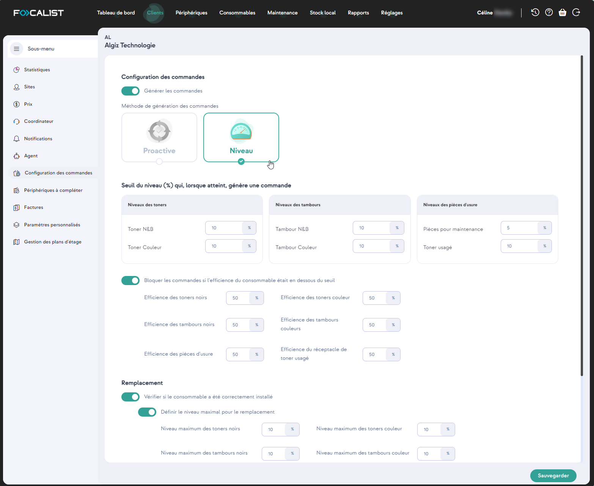
Une autre fonction importante de l'application est la possibilité de bloquer les commandes de matériaux dont l'efficience est inférieure à un certain pourcentage. L'utilisateur peut définir la performance minimale acceptable. Lorsque le rendement d'un matériau tombe en dessous de cette valeur, le système vous empêche de passer une commande pour ce matériau. Il s'agit d'un outil de contrôle efficace qui vous permet d'éviter de commander des matériaux inefficient, ce qui a un effet positif sur l'efficience et les coûts des ressources.
Dans le sous-onglet "Remplacement" de l'application, une option importante apparaît : l'activation de l'alarme en cas d'installation incorrecte du matériel.
Grâce à cette fonction, l'utilisateur peut configurer le système de telle sorte que si le matériau n'est pas installé correctement, une alarme se déclenche. Il s'agit d'une mesure de protection importante qui permet d'éviter les problèmes potentiels liés à une installation incorrecte des matériaux, qui pourraient affecter négativement la qualité des impressions et l'efficience de l'appareil.
L'utilisateur a également la possibilité de gérer :
-
les Réglages du niveau maximum en pourcentage du moment où le matériel doit être remplacé.
-
l'activation de l'alarme si le nouveau modèle de matériau ne correspond pas à celui qui a été commandé.
-
l'activation de l'alarme si le matériau a été remplacé à partir d'un autre appareil. Nous supposons que les niveaux de toner inférieurs à 80 % ne sont pas nouveaux, mais ont été précédemment utilisés dans une autre imprimante (sauf lorsqu'un périphérique est ajouté au système, le niveau de matériau peut alors être quelconque). En outre, si un numéro de série est présent, nous vérifions si ce numéro figure déjà dans notre base de données.
-
l'activation de l'alarme s'il n'y a pas eu de commande générée précédemment pour le matériel. Vérifiez qu'une commande existe pour le matériel avant de tenter un remplacement. Si elle n'existe pas, l'alarme est alors activée.
-
l'activation de l'alarme si la commande pour le matériau n'a pas été envoyée précédemment.
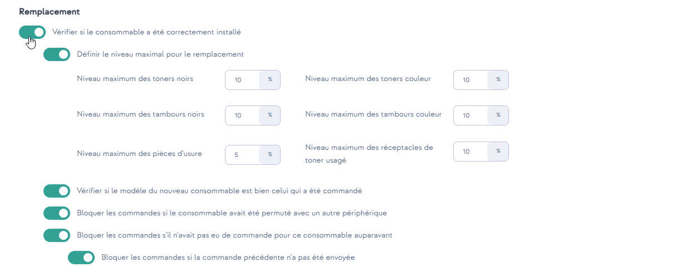
Un aspect important est que les commandes bloquées ne sont jamais automatiquement marquées comme "expédiées". Elles nécessitent toujours un traitement manuel
Périphériques ignorés
Cette section contient les listes de périphériques marqués comme ignorés, que les agents ignorent pendant l’analyse du réseau. Les périphériques de cette liste ne peuvent être ajoutés que dans la fenêtre « Ajouter un périphérique », lorsque vous décidez de les supprimer.
Factures
Les factures vous permettent de suivre les paiements des clients. Ce ne sont que des informations. En dehors de s’afficher, elles ne permettent de réaliser aucune action, comme envoyer des messages aux clients. Après avoir cliqué sur le bouton « Ajouter une facture », vous pouvez saisir les créances à payer par le client.
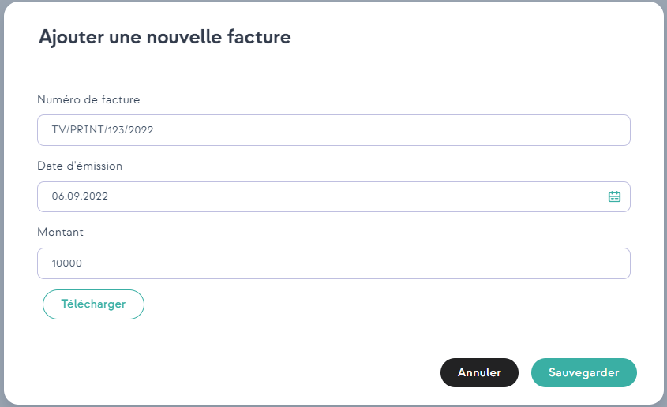
Après avoir ajouté des factures, vous avez 4 actions possibles :
-
Modifier : vous permet de modifier les données des factures et de télécharger le fichier
-
Ajouter un paiement : le montant total peut être payé en plusieurs fois. Pour un aperçu global plus clair, chaque paiement peut être ajouté séparément
-
Paiements, affiche la liste des paiements pour les factures sélectionnées
-
Supprimer : supprimer la facture de la liste, toutes les données de cette facture seront perdues
Exemple d’enregistrement de factures :
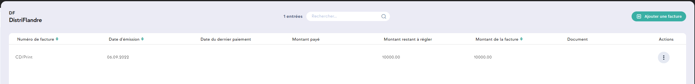
Autres règlages
Information sur le client
Dans ce libellé, il est possible de modifier toutes les données du client que vous avez saisies lorsque vous l’avez ajouté. Par exemple : Nom du client, Préfixe, Numéro d’identification fiscal, Langue, Adresse, Code postal, Ville, Devise, Pays et Activité.
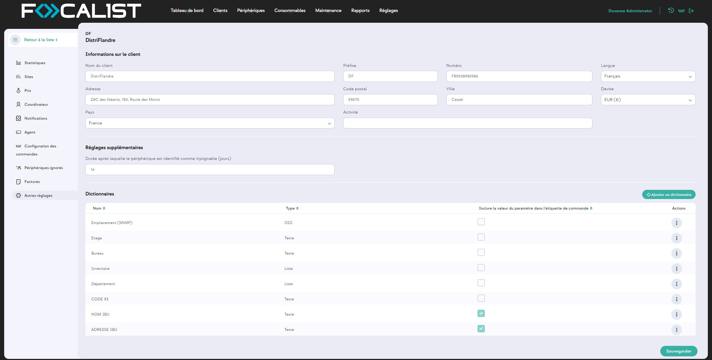
Autres règlages
Le délai après lequel le périphérique est marqué comme ne répondant pas (jours) - Il s’agit d’un paramètre général pour tous les périphériques d’un client donné, après lequel le périphérique passe de l’état actif à l’état ne répondant pas. L’absence de réponse est considérée comme un état actif, mais avec le dernier enregistrement de plus de jours inscrit dans ce champ.
Dictionnaires
Les dictionnaires sont des informations supplémentaires sur les périphériques qui peuvent être affichées dans l’onglet des périphériques sélectionnés, sous le libellé « Paramètres » dans l’onglet « Informations générales » du périphérique. En outre, ces informations sont inscrites dans toutes les listes à côté de la rubrique « Clients».
Il existe 3 types de dictionnaire :
-
Texte : dans cette option, vous saisissez un texte statique pour chaque périphérique tout en définissant son dictionnaire.
-
Liste : définit la liste de textes au moment de la création du dictionnaire, et vous sélectionnez un texte dans la liste lors du réglage du périphérique.
-
L’OID est un identifiant qui est envoyé à l’imprimante via le protocole SNMP pour récupérer des données spécifiques